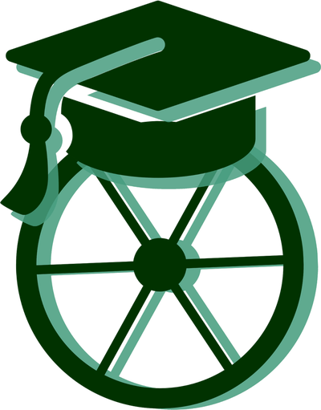
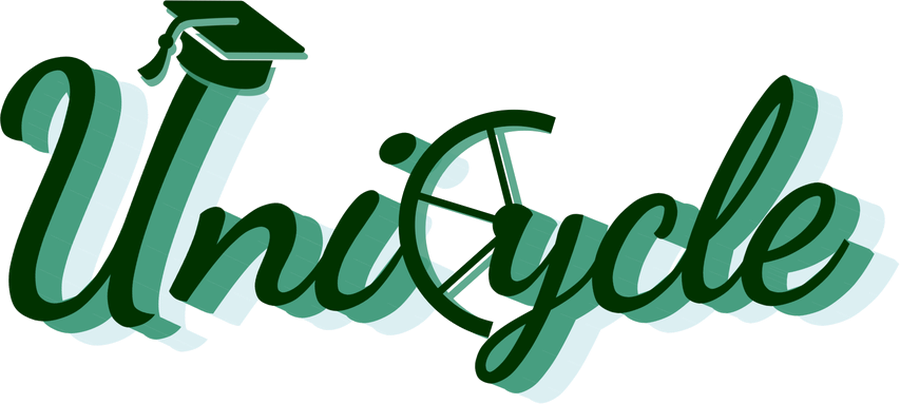

Every change has its own switch. Turn one off and it goes back to your original, and the other changes stay as they are. Nothing on the landing page changes until you choose what to keep.


The 16px and 24px icons show the problem most clearly. Thin spokes and the tassel disappear at those sizes, and the stacked shadows turn into a blur.